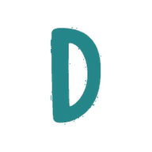

<!doctype html>
<html lang="es">
<head>
<meta charset="utf-8">
<meta name="viewport" content="width=device-width, initial-scale=1, viewport-fit=cover">
<meta name="theme-color" content="#0B4F4A">
<link rel="manifest" href="manifest.webmanifest">
<link rel="icon" href="icon-192.png">
<link rel="apple-touch-icon" href="apple-touch-icon.png">
<meta name="apple-mobile-web-app-capable" content="yes">
<meta name="mobile-web-app-capable" content="yes">
<meta name="apple-mobile-web-app-title" content="Dentaly">
<meta name="apple-mobile-web-app-status-bar-style" content="default">
<title>Dentaly</title>
<style>
  :root { --verde:#0B4F4A; --fondo:#F6F8F7; --naranja:#B45309; }
  html, body { margin:0; height:100%; background:var(--fondo); font-family: Arial, Helvetica, sans-serif; }
  iframe { position:fixed; inset:0; width:100%; height:100%; border:0; background:var(--fondo); }
  .pantalla { position:fixed; inset:0; display:flex; align-items:center; justify-content:center; padding:20px; box-sizing:border-box; }
  .caja { background:#fff; border:1px solid #E3ECE9; border-radius:22px; padding:26px 20px; width:100%; max-width:340px; text-align:center; box-shadow:0 10px 28px rgba(11,79,74,.12); }
  .caja img { width:72px; height:72px; border-radius:18px; }
  h1 { color:var(--verde); font-size:20px; margin:10px 0 4px; }
  p { color:#717171; font-size:13px; margin:0 0 16px; }
  input { font-size:22px; letter-spacing:6px; text-align:center; width:100%; box-sizing:border-box; padding:12px; border:1px solid #CBDDD8; border-radius:14px; background:#F7F7F7; outline:none; }
  .ops { display:flex; gap:8px; margin:14px 0 4px; }
  .ops button { flex:1; padding:12px 6px; border-radius:14px; border:1px solid #CBDDD8; background:#fff; color:var(--verde); font-weight:700; font-size:14px; }
  .ops button.on { background:var(--verde); color:#fff; border-color:var(--verde); }
  .go { width:100%; margin-top:12px; padding:14px; border:none; border-radius:999px; background:var(--naranja); color:#fff; font-size:16px; font-weight:800; }
  .cargando { position:fixed; inset:0; display:flex; flex-direction:column; align-items:center; justify-content:center; gap:12px; color:var(--verde); font-weight:700; background:var(--fondo); transition:opacity .3s; }
  .ios { text-align:left; background:#FFF7ED; border:1px solid #FED7AA; color:#7C2D12; border-radius:14px; padding:10px 12px; font-size:13px; line-height:1.45; margin:0 0 14px; }
  .ios b { color:#7C2D12; }
  .cargando img { width:84px; height:84px; border-radius:22px; }
</style>
</head>
<body>
<script>
/* DENTALY COMO APP. Este archivo solo "abre" el sistema de Apps Script en
   pantalla completa y en su propia ventana. No guarda datos de pacientes:
   el PIN se queda solo en ESTE teléfono. */
var SISTEMA = 'https://script.google.com/macros/s/AKfycbwExKBacg6rF_7T1fQddk8YhgOCHolOXoD2JGw13KIHwdKGHHvWK9pzbGlMj1mmb9Wchw/exec';
var K_PIN = 'dentaly_app_pin', K_INICIO = 'dentaly_app_inicio';
function lsG(k){ try { return localStorage.getItem(k) || ''; } catch(e){ return ''; } }
function lsS(k, v){ try { localStorage.setItem(k, v); } catch(e){} }

/* Ligas directas: https://elernest99.github.io/dentaly/?caja=DX-065 (o ?id=,
   ?orden=, ?fecha=...) abren ESA pantalla dentro de la app. En Android, si la
   app está instalada, el teléfono abre estas ligas en la app y no en Chrome. */
function destinoDeLiga(){
  var q = (location.search || '').replace(/^\?/, '');
  if (!q) return '';
  var partes = q.split('&').filter(function(kv){
    var k = kv.split('=')[0];
    return k && k !== 'config' && k !== 'pin';
  });
  return partes.join('&');
}

/* REGRESAR DONDE ESTABA (2026-10-28): el sistema avisa en qué pantalla va
   (ficha, agenda, menú…). Si el teléfono cerró la app para ahorrar memoria,
   al abrirla de nuevo regresa ahí mismo (si fue en las últimas 8 horas).
   La agenda siempre abre en HOY. */
var K_ULT = 'dentaly_app_ultimo', K_FEC = 'dentaly_app_dia';
window.addEventListener('message', function(e){
  var d = e && e.data;
  if (!d || !d.dentalyPos || typeof d.dentalyPos !== 'object') return;
  var p = {}, src = d.dentalyPos;
  Object.keys(src).forEach(function(k){ if (['pin', 'accion', 'pac', 'fecha', 'mi'].indexOf(k) === -1) p[k] = String(src[k]); });
  lsS(K_ULT, JSON.stringify({ p: p, t: Date.now() }));
  // Día que se está viendo en la agenda: si se RECARGA pronto (30 min), regresa a ese día.
  if (d.dentalyFecha && /^\d{4}-\d{2}-\d{2}$/.test(String(d.dentalyFecha))) lsS(K_FEC, JSON.stringify({ f: String(d.dentalyFecha), t: Date.now() }));
});
/* 🔔 AVISOS DE TAREAS (2026-10-30): la agenda (con el PIN de recepción) manda
   "dentalyAviso" y aquí se convierte en notificación del teléfono o de Windows,
   aunque esté en otra ventana. Primero hay que activarlos con el botón 🔔. */
function botonAvisos(){
  if (!('Notification' in window) || Notification.permission !== 'default' || document.getElementById('btnAvisos')) return;
  var b = document.createElement('button');
  b.id = 'btnAvisos'; b.textContent = '🔔 Activar avisos';
  b.style.cssText = 'position:fixed;right:12px;bottom:150px;z-index:99;background:#5B21B6;color:#fff;border:none;border-radius:999px;padding:12px 16px;font:800 14px Arial,sans-serif;box-shadow:0 4px 14px rgba(0,0,0,.3);';
  b.onclick = function(){ Notification.requestPermission().then(function(){ b.remove(); }); };
  document.body.appendChild(b);
}
function notificar(t){
  if (!('Notification' in window) || Notification.permission !== 'granted') return;
  var op = { body: t.texto || '', tag: t.tag || 'dentaly', renotify: true, requireInteraction: true, vibrate: [300, 150, 300], icon: 'icon-192.png', badge: 'icon-192.png' };
  if (navigator.serviceWorker && navigator.serviceWorker.ready) navigator.serviceWorker.ready.then(function(r){ r.showNotification(t.titulo || 'Dentaly', op); }).catch(function(){ try { new Notification(t.titulo || 'Dentaly', op); } catch(e){} });
  else { try { new Notification(t.titulo || 'Dentaly', op); } catch(e){} }
}
window.addEventListener('message', function(e){
  var d = e && e.data; if (!d) return;
  if (d.dentalyQuiereAvisos) botonAvisos();
  if (d.dentalyAviso) notificar(d.dentalyAviso);
});

function ultimoLugar(){
  try {
    var u = JSON.parse(lsG(K_ULT) || 'null');
    if (!u || Date.now() - u.t > 8 * 3600000) return '';
    var q = Object.keys(u.p).map(function(k){ return encodeURIComponent(k) + '=' + encodeURIComponent(u.p[k]); }).join('&');
    // Recargar = seguir en el mismo día de la agenda (si fue hace menos de 30 min; si no, abre en hoy).
    try { var fd = JSON.parse(lsG(K_FEC) || 'null'); if (u.p.agenda && fd && Date.now() - fd.t < 30 * 60000) q += '&fecha=' + encodeURIComponent(fd.f); } catch(e2){}
    return q;
  } catch (e) { return ''; }
}

function abrir(){
  var pin = lsG(K_PIN), inicio = lsG(K_INICIO) || 'agenda';
  var liga = destinoDeLiga() || ultimoLugar();
  var url = liga
    ? SISTEMA + '?' + liga + '&pin=' + encodeURIComponent(pin)
    : SISTEMA + (inicio === 'agenda' ? '?agenda=1&' : '?') + 'pin=' + encodeURIComponent(pin);
  document.body.innerHTML = '<div class="cargando" id="carga"><div>Abriendo Dentaly…</div></div>';
  var f = document.createElement('iframe');
  f.src = url;
  f.allow = 'camera; microphone; clipboard-read; clipboard-write; fullscreen';
  f.onload = function(){ var c = document.getElementById('carga'); if (c) { c.style.opacity = '0'; setTimeout(function(){ c.remove(); }, 300); } };
  document.body.insertBefore(f, document.body.firstChild);
}

// En iPhone: si se abrió desde Safari (no desde el ícono), explica cómo instalarla.
function avisoIphone(){
  var ua = navigator.userAgent || '';
  var ios = /iPhone|iPad|iPod/.test(ua) || (navigator.platform === 'MacIntel' && navigator.maxTouchPoints > 1);
  var instalada = window.navigator.standalone === true || (window.matchMedia && matchMedia('(display-mode: standalone)').matches);
  if (!ios || instalada) return '';
  return '<div class="ios">📲 <b>Para tenerla como app en tu iPhone:</b><br>1. Toca <b>Compartir</b> (el cuadrito con flecha ⬆️).<br>2. Elige <b>“Agregar a inicio”</b> y luego <b>Agregar</b>.<br>3. Abre Dentaly desde el ícono nuevo y escribe ahí tu PIN.</div>';
}

function configurar(){
  var inicio = lsG(K_INICIO) || 'agenda';
  document.body.innerHTML =
    '<div class="pantalla"><div class="caja">' +
    '<h1>Dentaly</h1>' + avisoIphone() + '<p>Escribe <b>tu PIN personal</b> (el mismo de “Mi página”). Se queda guardado en este teléfono y el sistema te reconoce.</p>' +
    '<input id="pin" type="password" inputmode="numeric" maxlength="8" autocomplete="off" placeholder="••••" value="' + lsG(K_PIN).replace(/"/g, '') + '">' +
    '<div class="ops"><button type="button" data-i="agenda">🗓️ Abrir en Agenda</button><button type="button" data-i="menu">🏠 Abrir en Menú</button></div>' +
    '<button class="go" id="go">Entrar</button></div></div>';
  var bs = document.querySelectorAll('.ops button');
  function marcar(){ bs.forEach(function(b){ b.className = b.getAttribute('data-i') === inicio ? 'on' : ''; }); }
  bs.forEach(function(b){ b.onclick = function(){ inicio = b.getAttribute('data-i'); marcar(); }; });
  marcar();
  document.getElementById('go').onclick = function(){
    var p = document.getElementById('pin').value.replace(/\D/g, '');
    if (p.length < 4) { document.getElementById('pin').focus(); return; }
    lsS(K_PIN, p); lsS(K_INICIO, inicio); abrir();
  };
  document.getElementById('pin').onkeydown = function(e){ if (e.key === 'Enter') document.getElementById('go').click(); };
}

// Para cambiar el PIN o la pantalla de inicio: abrir la dirección con ?config
if (location.search.indexOf('config') !== -1 || !lsG(K_PIN)) configurar(); else abrir();

/* Si la app ya estaba abierta y llega una liga (QR de caja, etc.):
   el manifest dice "navigate-existing", así que el teléfono recarga la app
   CON la liga y abrir() la lleva a esa pantalla. Esto de abajo es el respaldo
   para teléfonos que solo traen la app al frente sin recargar. (2026-10-29:
   antes el QR traía la app al frente pero se quedaba en el calendario.) */
if ('launchQueue' in window) {
  try {
    var URL_ARRANQUE = location.href;
    window.launchQueue.setConsumer(function(params){
      if (!params || !params.targetURL) return;
      // Si la app se abrió (o recargó) YA con esa liga, abrir() ya la cargó: no se repite.
      if (params.targetURL === URL_ARRANQUE) { URL_ARRANQUE = ''; return; }
      var u = new URL(params.targetURL), q = u.search.replace(/^\?/, '');
      if (!q || q.indexOf('config') !== -1) return;
      var f = document.querySelector('iframe'), pin = lsG(K_PIN);
      var url = SISTEMA + '?' + q.split('&').filter(function(kv){ return kv.split('=')[0] !== 'pin'; }).join('&') + '&pin=' + encodeURIComponent(pin);
      if (f) f.src = url; else abrir();
    });
  } catch (e) {}
}

if ('serviceWorker' in navigator) navigator.serviceWorker.register('sw.js').catch(function(){});
</script>
</body>
</html>
